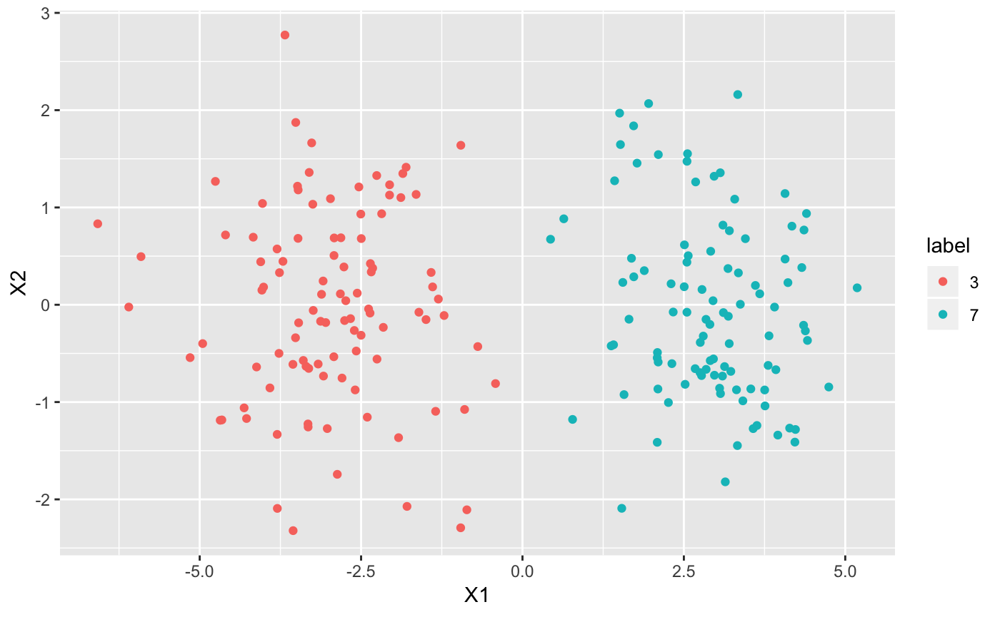
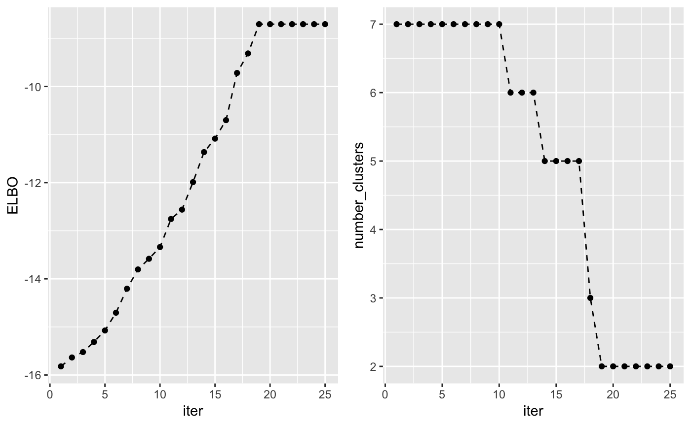
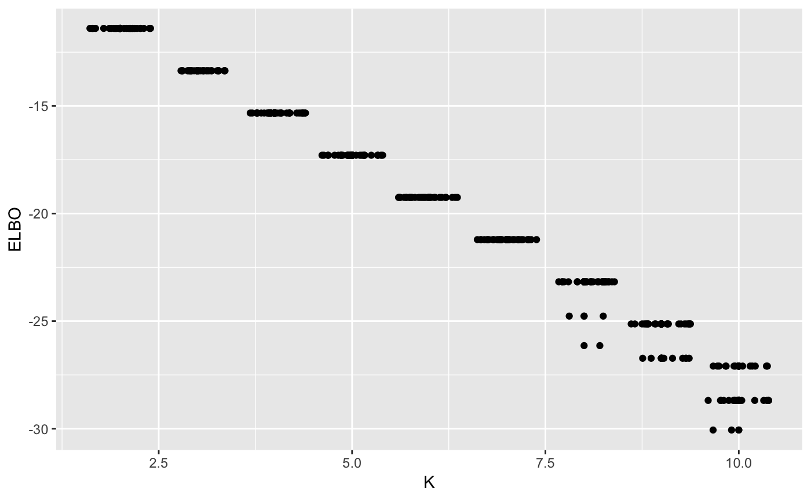

Mixtures of multivariate Gaussian distributions
Alessandra Cabassi
2019-04-01
vimix.RmdMixtures of multivariate Gaussians
Suppose we have a small dataset containing two clusters.
library(mvtnorm)
library(vimix)
## Load a dataset containing 200 2-dimensional data points
data <- rbind(rmvnorm(100,c(-3,0)), rmvnorm(100,c(3,0)))Then we can use the function vimix to fit a mixture of multivariate Gaussian distributions:
## Use variational inference for mixture of Gaussians to find clusters
output <- vimix(data, K = 7, verbose = T)Let’s see what our clusters look like:
## Plot cluster labels
library(ggplot2)
library(broom)
library(gridExtra)
## Convert data matrix and cluster labels to data.frame
df <- tidy(data)
df$label <- as.factor(output$label)
## Plot clusters
ggplot(df, aes(X1, X2, col = label)) + geom_point()
The lower bound increases at each iteration of the algorithm and can be used to check whether the algorithm has converged. Another interesting value to check at each iteration is the number of non-empty clusters.
## Check that the lower bound is monotonically increasing
lb <- tidy(output$L[-1])
lb$ELBO <- lb$x
lb$x <- NULL
lb$iter <- c(1:length(output$L[-1]))
lb$number_clusters <- output$Cl[-1]
## Plot lower bound
plot_lb <- ggplot(lb, aes(x=iter,y=ELBO)) + geom_line(linetype = "dashed") + geom_point()
## Plot number of non-empty clusters
plot_nc <- ggplot(lb, aes(x=iter,y=number_clusters)) + geom_line(linetype = "dashed") + geom_point()
grid.arrange(plot_lb, plot_nc, ncol = 2)
Finally, it is important to note that the algorithm doesn’t always converge to the same solution. Depending on the initialization, it will converge to different local optima. However, by runnin the algorithm multiple times, we can see that, the optimal solution is almost always reached, in this simple case.
maxK <- 10
n_random_starts <- 30
ELBO <- matrix(0, maxK-1, n_random_starts)
for(k in 2:maxK){
for(j in 1:n_random_starts){
output <- vimix(data, K = k)
ELBO[k-1,j] <- output$L[length(output$L)]
}
}
library(reshape)
ELBO <- melt(t(ELBO))
names(ELBO) <- c('start_n', 'K', 'ELBO')
ELBO$K <- ELBO$K + 1
ggplot(ELBO, aes(x = K, y = ELBO)) + geom_point() + geom_jitter()
Now, let’s try to use the same mixture model as above, but with the additional assumption that all the variables are independent.
## Use variational inference for mixture of Gaussians to find clusters
output <- vimix(data, K = 7, indep = T, verbose = T)We can again check the clustering solution:
## Convert data matrix and cluster labels to data.frame
df <- tidy(data)
df$label <- as.factor(output$label)
## Plot clusters
ggplot(df, aes(X1, X2, col = label)) + geom_point()and the lower bound and number of non-empty clusters at each iteration:
## Check that the lower bound is monotonically increasing
lb <- tidy(output$L[-1])
lb$ELBO <- lb$x
lb$x <- NULL
lb$iter <- c(1:length(output$L[-1]))
lb$number_clusters <- output$Cl[-1]
## Plot clusters
plot_lc <- ggplot(lb, aes(x=iter,y=ELBO)) + geom_line(linetype = "dashed") + geom_point()
## Plot number of non-empty clusters
plot_nc <- ggplot(lb, aes(x=iter,y=number_clusters)) + geom_line(linetype = "dashed") + geom_point()
grid.arrange(plot_lc, plot_nc, ncol = 2)Like before, there is no guarantee that the algorithm will converge to the global optimum. However, we observe in practice that this is usually the case.
maxK <- 10
n_random_starts <- 30
ELBO <- matrix(0, maxK-1, n_random_starts)
for(k in 2:maxK){
for(j in 1:n_random_starts){
output <- vimix(data, K = k, indep = T)
ELBO[k-1,j] <- output$L[length(output$L)]
}
}
library(reshape)
ELBO <- melt(t(ELBO))
names(ELBO) <- c('start_n', 'K', 'ELBO')
ELBO$K <- ELBO$K + 1
ggplot(ELBO, aes(x = K, y = ELBO)) + geom_point() + geom_jitter()